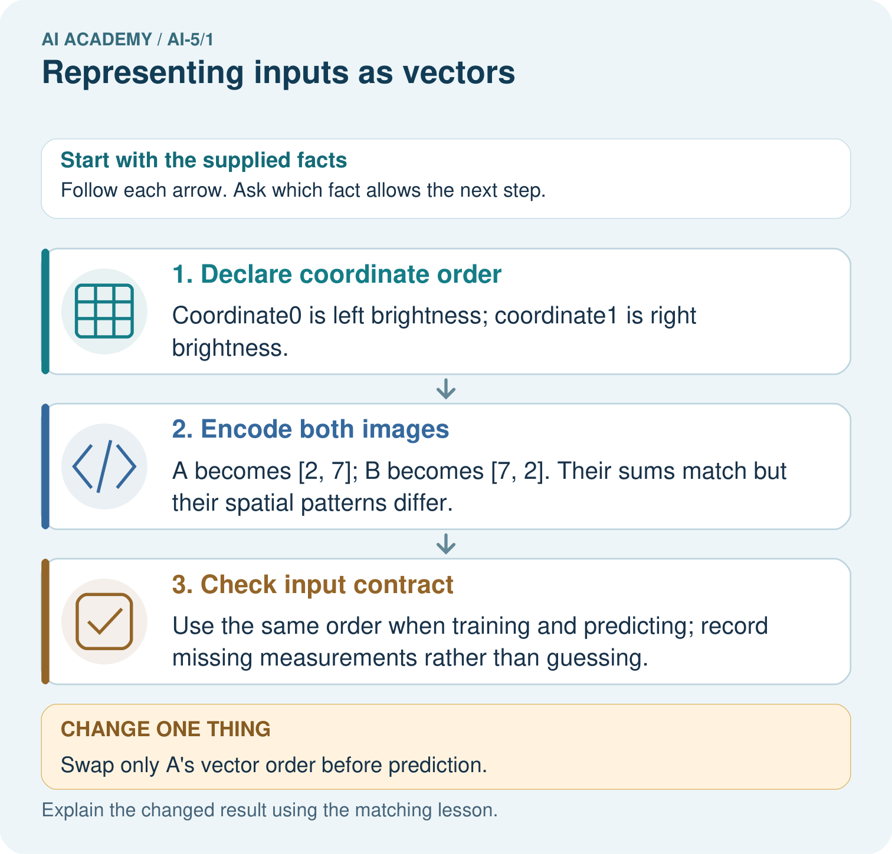

AI Academy · Level 5 · Grade 10 · Week 1 · Student lesson
Representing inputs as vectors
Learn to understand, design, build, test and explain AI systems responsibly.
Project: Image-pattern Network Investigation
Before you start
A parcel classifier uses width and height to predict a class. Why must its final class label stay outside the input features?
Plan time to read, investigate and explain. Keep predictions separate from observations.
Student lesson · 1 of 17
Your mission
Your learning target
I can encode a record using a fixed feature order and units.
I can distinguish a vector dimension from the number of examples.
I can detect missing values and target leakage before computation.
Remember before reading
Close your notes first. A rough first answer helps us choose the right starting point; it is not a score for your ability.
Without opening the old lesson, explain one key idea from ML Builder Expo. Give an example and a mistake that the idea helps you avoid.
After trying, check the relevant lesson or ask your teacher. Change the part of your explanation that the evidence shows was wrong.
This week you will practise:
Encode a record using a fixed feature order and units
Distinguish a vector dimension from the number of examples
Detect missing values and target leakage before computation
Retrieve what you already know
A parcel classifier uses width and height to predict a class. Why must its final class label stay outside the input features?
This week’s end goal
By the end, I can explain representing inputs as vectors using a traced example and a stated limitation.
Student lesson · 2 of 17
Notice the evidence
A neural network receives numbers in a specified order. Before learning how it computes, we need to represent one example without losing the meaning of its fields. A vector is an ordered list: [4, 2] can mean width 4 cm and height 2 cm if that is the declared order. Reversing the two numbers describes a different rectangle under the same schema.
For this fictional parcel investigation, use [width in cm, height in cm]. Width and height must both be present and greater than zero. The vector has dimension 2 because it contains two components. Record IDs identify examples; they do not measure the parcel. The target class is stored separately.
| Record | Width and height in cm | Input vector |
|---|---|---|
| A | 4 and 2 | [4, 2] |
| B | 2 and 4 | [2, 4] |
| C | 3 and 3 | [3, 3] |
There are three examples, each with two features. Stacking their vectors makes a table with three rows and two columns. Do not confuse the number of rows with the dimension of one input.
Student lesson · 3 of 17
See how it works
Read fields by name, convert to the declared units, validate, and only then write the vector. Parcel D has width 50 mm and height 30 mm. Because 10 mm equals 1 cm, its encoded vector is [5, 3]. Writing [50, 30] would preserve the numbers while changing the physical meaning by a factor of ten.
def encode(width_mm, height_mm):
if width_mm is None or height_mm is None:
raise ValueError("Missing measurement")
if width_mm <= 0 or height_mm <= 0:
raise ValueError("Measurements must be positive")
return [width_mm / 10, height_mm / 10]
print(encode(50, 30)) # [5.0, 3.0]This short function assumes each supplied value is a number in mm or None for missing. It is a classroom example, not a complete input validator. Trace the conversion before running it. The function represents data; it does not fit a model or predict a class.
Connect the picture and the explanation
Point to the input, the deciding step and the result in this week’s visual. Explain the same step in ordinary words. A picture helps when you can say what each part represents.
Student lesson · 4 of 17
Compare the cases
Compare a familiar case with a changed case
A new record has width 60 mm and height 10 mm. Give its vector in the agreed cm schema, and name one error in [60, 10].
Change one thing in the pictured case
Change: Swap only A’s vector order before prediction.
Prediction: The encoded input becomes [7, 2], numerically identical to B’s original input.
Reason: Changing coordinate order changes feature meaning even if the numbers are unchanged.
Student lesson · 5 of 17
Words that unlock the idea
| Word | Meaning |
|---|---|
| Vector | An ordered list of numerical components |
| Component | One value at a specified position in a vector |
| Dimension | The number of components in a vector |
| Schema | The recorded feature order, units and validity rules |
Student lesson · 6 of 17
Follow a worked example
An input vector keeps an agreed order
Learn from the worked case
Cover the result before checking it. Say what is given, choose the procedure, and follow one step at a time. Then uncover the result and explain your first mismatch. Ask why a step is allowed, not only what number it produces.
A pictorial worked case: Representing inputs as vectors
Encode the same pixel measurements in a fixed vector order.
The facts we will use
Toy image features are [left_brightness, right_brightness], each = 0..10. ImageA has left2, right7; imageB has left7, right2.
All inputs and outcomes in this worked example are invented classroom data; no real model run is claimed.

Read the picture one step at a time
Why this result follows
A vector is an ordered list, so the position of a number carries meaning. Here the first number always means left brightness. Adding the two measurements keeps total brightness but discards which side is brighter. A network receives the representation we give it; it cannot recover a lost distinction just because it has more layers.
What this example does not establish
These two features are simplified measurements, not a complete image representation or evidence of learned vision.
Read the labelled picture: Why does equal total brightness not make A and B identical inputs? Point to the relevant step in the picture, then write the changed result and the rule or evidence that supports it.
Change one thing: Swap only A’s vector order before prediction. Predict the result before checking the explanation. What remains the same?
Student lesson · 7 of 17
Find and repair a mistake
A missing height is unknown, not zero. Under this schema zero is also invalid, so reject the incomplete record and request the measurement. A different project might use a documented training-fitted replacement plus a missingness flag; that would be a different schema that must be applied consistently.
A changed field order must also change every consumer that reads positions. A vector can have the expected length and still be wrong because its order, units or meaning changed. A class label appended as a third component causes target leakage even if the software accepts three values.
Locate the earliest unsupported step
Width is 4 cm and height is missing. A teammate writes [4, 0]. Explain why this is invalid and give the action required by this schema.
Student lesson · 8 of 17
Practise together
Write A, B and C as ordered pairs from the lesson. State the dimension of each and the shape of the stacked table.
Practise with less help: Convert before encoding
Use workbook W2 for the connected example “Representing inputs as vectors”. First fill the input and rule boxes. Try the middle steps before asking for a hint. After a hint, try the next step yourself.
| Plan | Do | Check |
|---|---|---|
| What is given? Which rule or procedure applies? | Record each intermediate step. | Does the result follow? What remains unknown? |
Explain your trace to a partner. Your partner points to one step to check. Swap roles on the next case. Each person writes their own explanation.
Check your reasoning
Use the worked case for Representing inputs as vectors. Proposed explanation: “Order does not matter”. Decide whether this explanation is supported. Point to the step or supplied fact that decides; explain your repair if needed.
Answer on your own before discussion. If you are unsure, say which step you need help with.
Explain the picture
Why does equal total brightness not make A and B identical inputs? Point to the relevant step in the picture, then write the changed result and the rule or evidence that supports it.
This is supported practice. Keep the separately named independent case for an attempt before feedback.
Student lesson · 9 of 17
Run the investigation
Predict, investigate and preserve the evidence
A new record has width 60 mm and height 10 mm. Give its vector in the agreed cm schema, and name one error in [60, 10].
def encode(width_mm, height_mm):
if width_mm is None or height_mm is None:
raise ValueError("Missing measurement")
if width_mm <= 0 or height_mm <= 0:
raise ValueError("Measurements must be positive")
return [width_mm / 10, height_mm / 10]
print(encode(50, 30)) # [5.0, 3.0]| Record | Your evidence |
|---|---|
| Given input and fixed rule | |
| Prediction before checking | |
| Actual result, or “not run” | |
| First mismatch and one explanation | |
| Boundary or missing input and expected response |
On paper, trace the supplied procedure. If code is provided, predict before running it in a local practice file. Never write an expected answer as though it were an observed run.
Plan → try → check
Before trying: what do I expect, and why? While trying: which step could first go wrong? Afterwards: what did I actually observe, and what should change? Keep “not run” if you only traced the procedure.
Student lesson · 10 of 17
Build your understanding
Explain → apply → challenge
Write A, B and C as ordered pairs from the lesson. State the dimension of each and the shape of the stacked table.
Width is 4 cm and height is missing. A teammate writes [4, 0]. Explain why this is invalid and give the action required by this schema.
Two parcels have the same width and height but different material and target class. Explain why adding more examples alone cannot let this deterministic two-feature model tell these two inputs apart.
Student lesson · 11 of 17
Connect your project
Add a labelled representing inputs as vectors evidence sheet to Image-pattern Network Investigation. Show how you can encode a record using a fixed feature order and units. Use the supplied fictional case and keep its inputs, intermediate steps, calculation or prediction, and limitation. Connect this record to last week’s record; a matching answer without a trace is insufficient.
| Project evidence | Record |
|---|---|
| Component and version | |
| Inputs permitted at prediction time | |
| Trace and comparison with earlier work | |
| Failure, limit and human review |
Evidence for your project
For your Image-pattern Network Investigation, save the input, procedure, observed result and limitation of this check. Label this worked example as practice; use a different, previously unreviewed case when checking independent understanding.
Student lesson · 12 of 17
Show what you know
Two parcels can share width and height yet differ in material or weight. Their vectors are identical in this representation, so a deterministic model receiving only these features cannot distinguish them. Adding a feature changes the schema and dimension; it does not automatically improve predictions. Keep data splits and evaluation discipline from Grade 8.
Next week, we will multiply each component by a matching weight and add the results. The computation is meaningful only if the feature order stays fixed.
Two parcels have the same width and height but different material and target class. Explain why adding more examples alone cannot let this deterministic two-feature model tell these two inputs apart.
Student lesson · 13 of 17
Study a complete case
Complete evidence record
An input vector keeps an agreed order
Follow the input through the stated procedure to its result. Cover the result first, predict it, then explain every intermediate step. The text/table accompanies the figure so the example can be read without colour.
Student lesson · 14 of 17
Try a new case independently
Independent case: Apply a new schema independently
A new toy battery task uses [temperature in degrees C, voltage in V, age in days]. Record K has voltage 5, age 12, temperature 18. Record L has temperature 20, voltage 4, age 0. Encode both; state the vector dimension and table shape. Age zero is valid. The future failure label is also supplied in the data file: should it be appended?
Attempt this case before feedback. Record any help. Earlier examples below are further practice; a case already practised with feedback cannot establish fresh transfer.
Attempt this without hints
A new toy battery task uses [temperature in degrees C, voltage in V, age in days]. Record K has voltage 5, age 12, temperature 18. Record L has temperature 20, voltage 4, age 0. Encode both; state the vector dimension and table shape. Age zero is valid. The future failure label is also supplied in the data file: should it be appended?
Record support used: none, hint or teacher explanation. After feedback, a different case is needed to demonstrate independence.
Use feedback to improve
Attempt the independent case before hints. Record whether you worked alone, used a hint or followed a model. After feedback, fix the first unsupported step and explain why it changed. A later check uses a changed case, not a copied answer.
Student lesson · 15 of 17
Your lesson route
Start with this question: Encode the same pixel measurements in a fixed vector order.
| By the end, I can | How I will show it |
|---|---|
| Encode a record using a fixed feature order and units | Explain the deciding step, show a trace or test, and state one limit. |
| Distinguish a vector dimension from the number of examples | Explain the deciding step, show a trace or test, and state one limit. |
| Detect missing values and target leakage before computation | Explain the deciding step, show a trace or test, and state one limit. |
Remember → watch and explain → try with help → investigate → try independently → keep project evidence. Your teacher may spread this lesson across several classes.
Keep your first prediction. Compare it with what the evidence shows and explain any change.
Student lesson · 16 of 17
Finish and return
Close your notes. Explain this goal in your own words: Encode a record using a fixed feature order and units
If you are unsure, return to the worked picture and explain one arrow. If you are ready, change an input or assumption and justify your prediction.
Save your workbook evidence. At the next review, try a different case before opening your old answer.
Student lesson · 17 of 17
Supported practice, repair and portfolio
Use this supported practice once, in the browser or on paper. Keep the reserved independent assessment for a separate first attempt before teacher feedback.
Encode the same pixel measurements in a fixed vector order.
Practice 1: explain the deciding evidence
Which labelled step matches this detail? Use the same order when training and predicting; record missing measurements rather than guessing.
1. Declare coordinate order
2. Check input contract
3. Encode both images
Hint if needed: Read the steps in the pictorial case. Match the supplied detail to the stage that performs or records it.
After your attempt, compare with the supported explanation: Check input contract Use the same order when training and predicting; record missing measurements rather than guessing. A vector is an ordered list, so the position of a number carries meaning. Here the first number always means left brightness. Adding the two measurements keeps total brightness but discards which side is brighter. A network receives the representation we give it; it cannot recover a lost distinction just because it has more layers.
Practice 2: explain the deciding evidence
Changed-case practice: Swap only A’s vector order before prediction. Which conclusion is supported by the supplied facts?
1. The encoded input becomes [7, 2], numerically identical to B’s original input.
2. We can decide the result without examining the changed input or the procedure.
3. This one example guarantees correct results for every future input.
Hint if needed: Use the changed condition and the deciding step in the pictorial trace. The answer must say what follows from those facts.
After your attempt, compare with the supported explanation: The encoded input becomes [7, 2], numerically identical to B’s original input. Changing coordinate order changes feature meaning even if the numbers are unchanged.
Repair a missing building block
Review ML Builder Expo (ai-4/36). Goal: Defend the project using traceable evidence. Short practice: Which three supporting items should be visible at the expo? Point to the relevant step in the picture, then write the changed result and the rule or evidence that supports it.. Return to this week and explain what you changed.
Predict, run and debug
The browser lab lets you edit the supported Python examples already included in this lesson. Predict first, run, inspect the actual output or error, change one input, then run again. Keep code, predictions, actual results and a reasoned revision together. On paper, label your result as a trace rather than an execution.
Keep your completed work
Use Download completed work in the hosted lesson to export your answers, reflections, practice feedback and code-run evidence. Open the HTML copy to read or print it. Drafts stay in this browser when storage is available; clear drafts on a shared device.